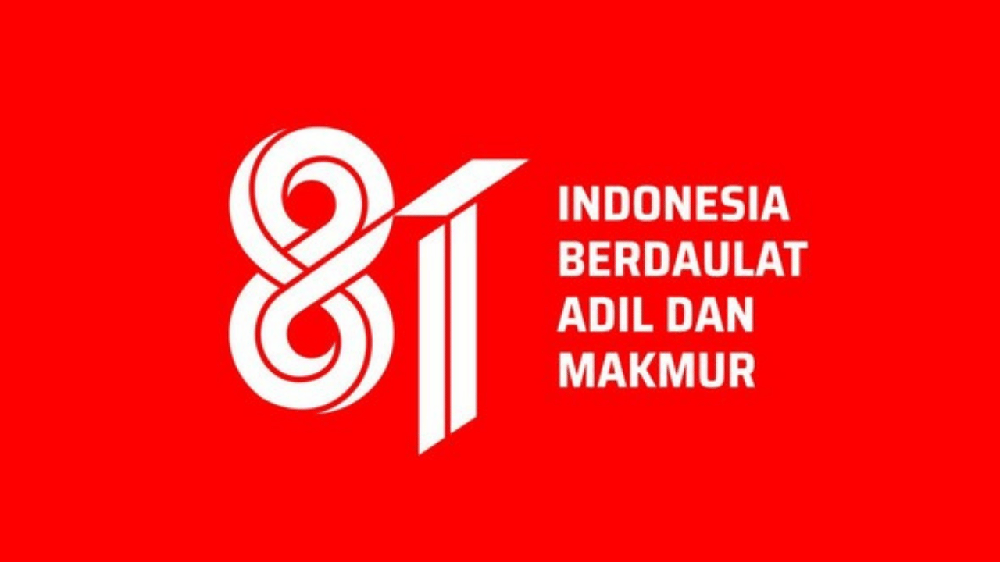

Sabtu, 15 Agustus 2026, MI Salafiyatul Ma'muroh menggelar kegiatan lomba dalam rangka memeriahkan Hari Ulang Tahun Republik Indonesia ke-81. Halaman madrasah dipenuhi dengan semangat dan antusiasme siswa-siswi yang mengenakan atribut bernuansa merah putih. Acara ini diselenggarakan untuk memupuk jiwa nasionalisme sekaligus mempererat tali persaudaraan antar siswa melalui berbagai kegiatan yang edukatif dan menghibur.
Berbagai perlombaan digelar untuk menambah kemeriahan suasana, di antaranya lomba estafet tepung dan estafet air yang diikuti dengan penuh keceriaan. Lomba estafet tepung menuntut konsentrasi tinggi karena tepung harus dioper dari teman di depan ke belakang tanpa melihat, sementara lomba estafet air melatih kekompakan tim dalam menjaga kestabilan air yang dipindahkan. Sorak-sorai dukungan dari siswa dan guru semakin menambah kemeriahan jalannya perlombaan di setiap sudut halaman madrasah.
Kegiatan ini bukan semata-mata mengenai kemenangan atau hadiah yang diperebutkan oleh para peserta. Lebih dari itu, perlombaan ini menjadi sarana bagi siswa untuk melatih sportivitas, keberanian, dan semangat kerja sama dalam mencapai tujuan bersama. Melalui permainan-permainan sederhana tersebut, nilai-nilai kemandirian dan gotong royong dapat ditanamkan kepada siswa sebagai cerminan semangat para pahlawan dalam memperjuangkan kemerdekaan bangsa Indonesia.
Puncak kegiatan ditutup dengan pembagian apresiasi bagi para pemenang lomba yang telah menunjukkan performa terbaik. Senyum kebahagiaan terpancar dari wajah seluruh warga madrasah yang turut serta dalam menyukseskan perayaan ini. MI Salafiyatul Ma'muroh berharap agar semangat kemerdekaan yang dirasakan hari ini dapat terus menyala dalam jiwa para siswa untuk terus belajar dan berkarya demi masa depan bangsa yang lebih baik.
← Kembali ke Beranda